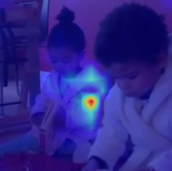
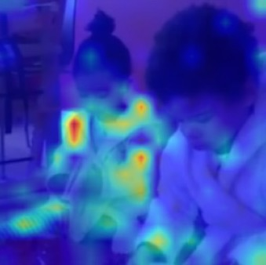

00The story in eight steps
Video models miss social structure
People watched 3-second clips of two-person interactions and judged which were alike. Across 14 pretrained vision encoders, none match that similarity structure as well as a sentence embedding of a one-line caption (MPNet) — even though participants never saw any text.
49,484 odd-one-out choices
On each trial, 245 participants picked the odd-one-out of three videos, implicitly marking the other two as more similar. A greedy set-cover design guarantees every video pair appears in at least one triplet.
Triplet loss: pull and push
At every step, the anchor clip (A) is pulled toward the clip humans judged similar (P) and pushed away from the odd-one-out (N). Only low-rank adapters (LoRA) and a small projector are updated.
RSA loss: match the whole map
Six times per epoch, a differentiable RSA loss aligns the model's full pairwise-distance matrix on a 24-video subset with the human similarity matrix — shaping global structure that local constraints miss.
The hybrid wins
On V-JEPA 2.1, the hybrid beats each loss alone and a budget-matched triplet model — so RSA adds different information, not just more constraints. A control that distills MPNet's caption knowledge instead falls far short.
Nearly triple the alignment
V-JEPA 2.1 ViT-B goes from R² = 0.058 to 0.165 — 78% of the noise ceiling, past MPNet. Every backbone improves, and fine-tuned models capture variance that caption embeddings can't.
It transfers to moving shapes
On PHASE — interactions between animated triangles with no faces or bodies — the frozen BGS encoder reaches 81%, up from 55%, matching human agreement within sampling error. Action recognition is preserved.
Attention moves to what matters
The pretrained model fixates on one region. After BGS, attention spreads across both agents, faces, gaze, and interacting hands — with no spatial supervision. Explore it below ↓




Pretrained+ BGS